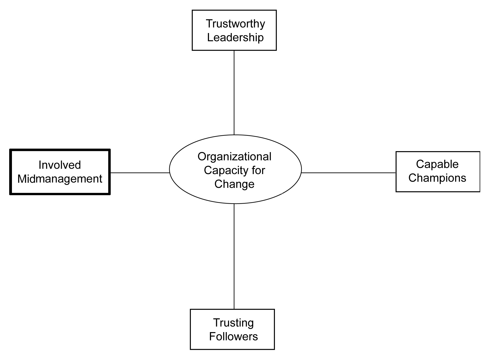

As in previous chapters, we conclude with seven actionable ideas that can be pursued to increase this particular dimension of organizational change capacity. While not all employees will welcome change, ignoring middle managers can have a devastating effect on change initiatives. In essence, involved middle managers are essential for bringing along a critical mass of employees to adopt a proposed change. As a result, middle managers’ involvement in the design and execution of a change process is essential.
In any organization, there are “A,” “B,” and “C” players. The A players are the ones who regularly exceed performance expectations and often step into leadership roles for change initiatives. They are the rising stars who have inordinate ambition, take risks, and like to push the envelope. The C players are those employees who are not meeting performance expectations. And then there are the B players. These are the employees who are meeting performance expectations, but they act in a supporting role to the rest of the organization. They assume a more “ordinary” and “limited” but critical role within the organization.
Within the middle management ranks, A players are often given most if not all the attention by senior management because they are often similar in drive and impact to those in senior executive positions. Often, these players are the change champions within the organization. In contrast, B players are often ignored and taken for granted while C players are given remedial attention or removed from the organization. Ignoring B players is a mistake since they play such a vital complementary role within a corporation.DeLong and Vijayaraghavan (2003).
B players often place a higher value on work–life balance than do A players. B players may have second-rate educational backgrounds or technical skills compared with A players, but they compensate by developing extensive interpersonal skills or organizational memory. And B players often bring a depth of understanding to the organization and the unit in which they operate, since they have not progressed as quickly up the organizational ladder as have A players.DeLong and Vijayaraghavan (2003).
Organizations need stars (i.e., A players) and a strong supporting cast (i.e., B players) if they want to be change capable. Senior executives need to recognize the differences between these two groups of employees and respect the differences in ambition, motivation, training, and so on. By understanding these differences, B players will feel more respected and involved and the organization will more likely benefit from their contributions.
When the economy is growing robustly and the organization is hitting its performance targets, investing in manager development initiatives is relatively easy to do. However, during slow periods, most organizations suspend all professional development initiatives, especially for middle managers. This is a missed opportunity.
During slow periods, investing in human capital is an ideal time to enhance the skills of your middle management ranks. Slow periods bring about fear within the employees’ ranks and present a unique opportunity to add new skills. By investing in management development initiatives for middle managers, the organization sends a signal that these employees are important, which reduces fear, and it generates loyalty. Furthermore, when the pace picks up, middle managers can sometimes rejuvenate their careers and display a burst of creative energy, become better supporting actors, or both. Management development is not a luxury during slow times, it is a necessity.Krishnamurthy (2008).
Not all middle managers want to become senior managers. Not all middle managers want to move every 2 to 3 years. Not all middle managers want to make huge sums of money. Not all middle managers want to tackle extremely challenging problems that have defied solution by others. Some middle managers are content with the way things are.
Most reward and recognition systems are designed to motivate and reward the A players. This needs to change. Change-capable organizations recognize the differences between A and B players and revise their reward systems to align with these differences. For example, rather than offering more compensation, sometimes the gift of time is valued as much if not more by some employees. Rather than offer a single career track, multiple career tracks should be considered since not all managers want the same careers and stress as do A players. In sum, recognize the differences between change champions and middle managers, and adjust your organizational systems to reward both types of management.DeLong and Vijayaraghavan (2003), p. 102.
Some middle managers provide solid and consistent performance, but they have plateaued in their careers. As a result, these plateaued managers are often older and less energetic than the change champions. However, with age sometimes comes wisdom and proven social networks and these individual capabilities are invaluable when the organization is confronted with large, transformative change initiatives. Perhaps this is why a recent research study found that the most effective managers in engaging with transformative change were the older, plateaued middle managers, as compared with the younger, rising stars.Spreitzer and Quinn (1995). Again, traditional middle managers can play a major supporting role and sometimes even a leading role in any change initiative.
In today’s increasingly information-based economy, successful strategy is more about learning faster than the competition than it is about exquisite and detailed deliberate strategic planning. Therefore, it only makes sense that involving the middle managers engaged with day-to-day operations as well as the customers can be a valuable source of learning and testing of strategic change ideas. Indeed, more and more research suggests that high-performance organizations regularly involve their middle managers in the substantive development of organizational strategy, as well as in its execution.Floyd and Wooldridge (1996). This involvement can be as formal and expensive as an organization-wide strategy conference, or as informal as a hallway chat with middle managers about the organization’s external threats and opportunities. Whatever form it takes, engaging middle managers in forming the strategy as well as executing it will enhance their knowledge and commitment to future change programs.
Adaptable and innovative organizations grow leadership at every level, and create a wide and deep array of internal talent to call upon in times of need. Leadership is not the preserve for a select few, but for as many in the organization as possible. This is especially true of middle managers who are not champions of change. Innovative organizations develop a “teachable point of view” on business ideas and values, and this can accelerate knowledge creation and transfer within the firm. Middle managers are not just “doers,” they also are “thinkers.” And if given the chance and the right circumstances, middle managers can also be “leaders.”Tichy and Cohen (1997).
Many significant organizational disasters—such as the British Petroleum oil rig explosion or the Bernie Madoff Ponzi scheme—could have been prevented or mitigated if those in the middle management ranks were allowed to voice constructive criticism. Middle managers need to have access to the senior leaders and they need to be allowed to deliver news that is not flattering. As one organizational consultant puts it, “Followers and leaders both orbit around the (organizational) purpose; followers do not orbit around the leader.”Chaleff (2009), p. 13. In other words, organizations must cultivate courage in the middle management ranks to speak “truth to hierarchy,”Chaleff (2009), chap. 7, pp. 179–204. and senior leaders need to be focused more on the well-being of the organization than on their own personal well-being.Judge (1999).
In sum, some of your middle managers need to be involved in helping to bring about change, even if they are not the change champions. Organization-wide change is complex and affects everyone. Middle managers can make a major contribution to actively bringing about change or passively assure its demise. Figure 6.1 "The Fourth Dimension of Organizational Capacity for Change: Involved Midmanagement" contains the fourth dimension of capacity for change.
Figure 6.1 The Fourth Dimension of Organizational Capacity for Change: Involved Midmanagement
